Учебная практика УП.01 по ПМ.01
Цель учебной практики:
Учебная практика УП.01 «Разработка модулей программного обеспечения для компьютерных систем»
по ПМ.01 «Разработка модулей программного обеспечения для компьютерных систем»
нацелена на отработку теоретических знаний и получение практического опыта в области разработки программных модулей,
разработки графических приложений, разработки мобильного приложения,
разработки сайта, их тестирования и документации.
Задачи учебной практики включали в себя:
- Решить задачи в виде консольных и графических приложений.
- Разработать АИС.
- Разработать мобильное приложение.
- Разработать сайт.
- Разработать руководство пользователя.
Разработка консольных и графических приложений
Задача 1
Ввести с консоли n-размерность матрицы a [n] [n].
Задать значения элементов матрицы в интервале значений от -n до n с помощью датчика случайных чисел.
Преобразовать строки матрицы таким образом, чтобы элементы, равные нулю, располагались после всех остальных.
Блок-схема:
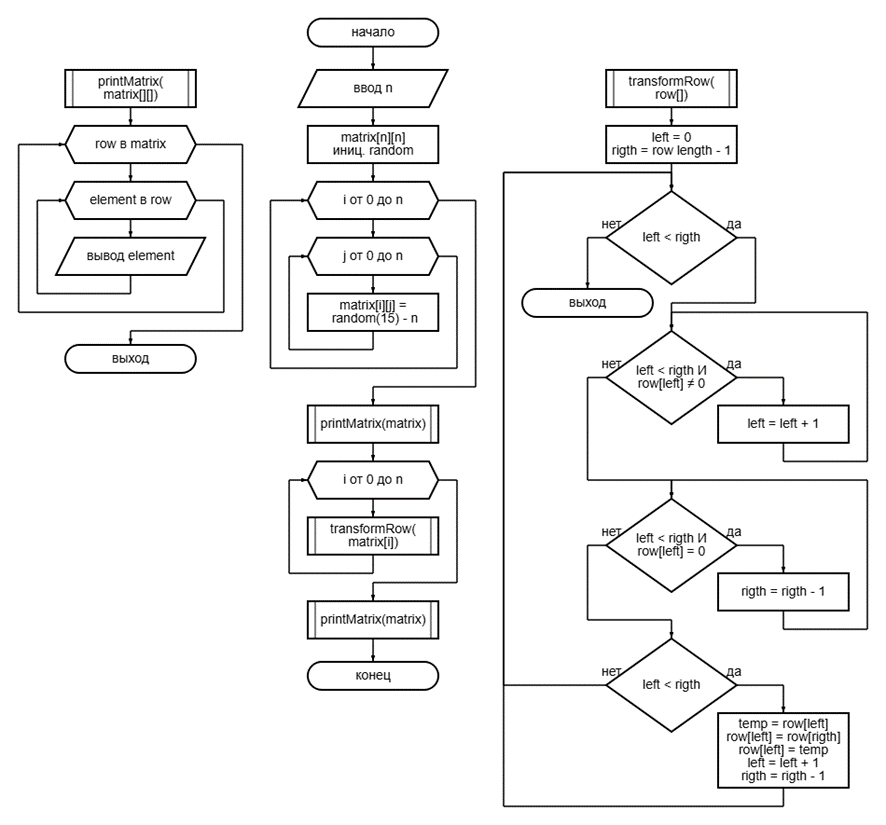
Результат:
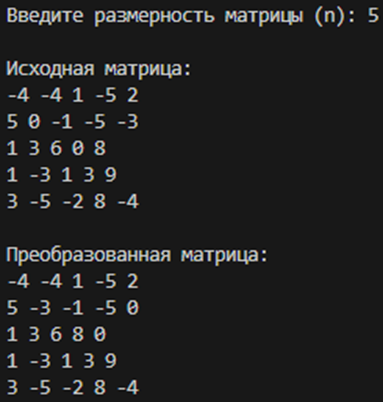
Задача 2
Реализовать методы сложения, вычитания, умножения и деления объектов (для тех классов, объекты которых могут поддерживать арифметические действия).
Определить класс Интервал с учетом включения/невключения концов.
Создать методы по определению пересечения и объединения интервалов, причем интервалы, не имеющие общих точек, пересекаться/объединятся не могут.
Объявить массив/список/множество и n интервалов и определить расстояние между самыми удаленными концами.
Диаграмма классов:
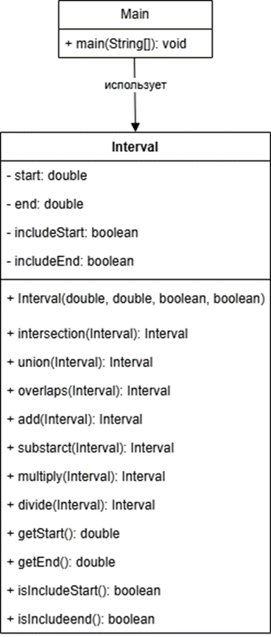
Результат:
Задача 3
Создать приложение, удовлетворяющее требованиям, приведенным в задании.
Наследование применять только в тех заданиях, в которых это логически обосновано.
Аргументировать принадлежность классу каждого создаваемого метода и корректно переопределить для каждого класса методы equals(), hashCode(), toString().
Создать объект класса Дерево, используя классы Лист, Ветка.
Методы: зацвести, опасть листьям, покрыться инеем, пожелтеть листьям.
Диаграмма классов:
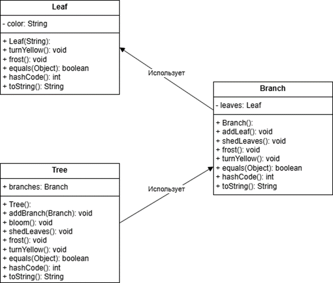
Результат:
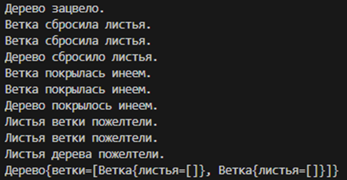
Задача 4
Создать класс Cinema с внутренним классом, с помощью объектов которого можно хранить информацию об адресах кинотеатров, фильмах и времени начала сеансов.
Диаграмма классов:
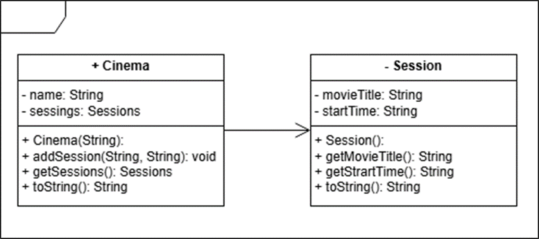
Результат:
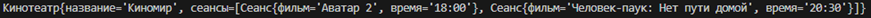
Задача 5
В тексте найти первую подстроку максимальной длины, не содержащую букв.
Блок-схема:
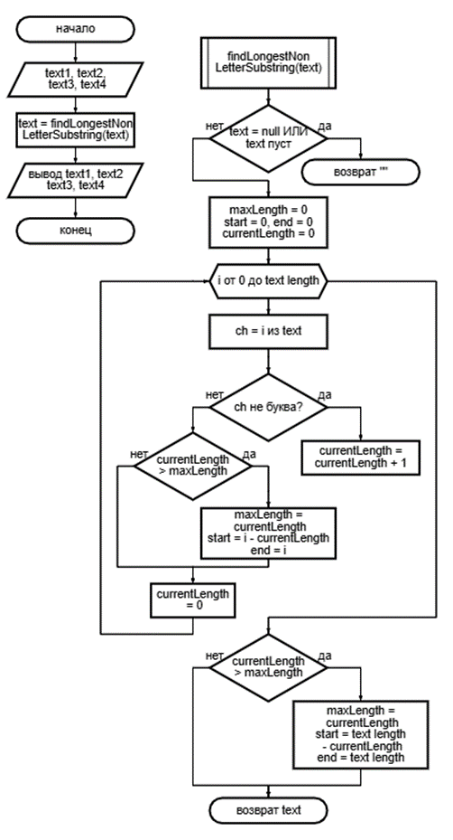
Результат:
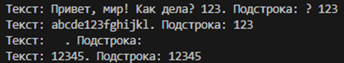
Задача 6
Выполнить задания на основе задачи № 3, контролируя состояние потоков ввода/вывода.
При возникновении ошибок, связанных с корректностью выполнения математических операций, генерировать и обрабатывать исключительные ситуации.
Предусмотреть обработку исключений, возникающих при нехватке памяти, отсутствии требуемой записи (объекта) в файле, недопустимом значении поля и т. д.
Выполнить задания из задачи № 3, реализуя собственные обработчики исключений и исключения ввода/вывода.
Диаграмма классов:
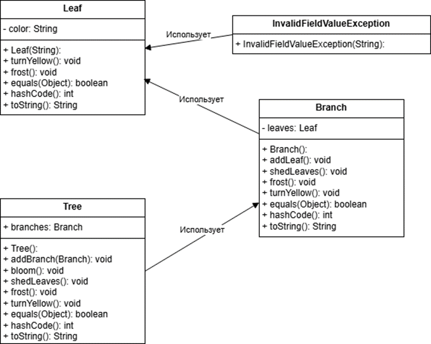
Результат:
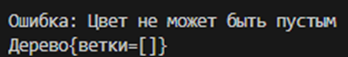
Задача 7
Составить программу получения на экране рисунков.
Необходимый рисунок:
Результат:
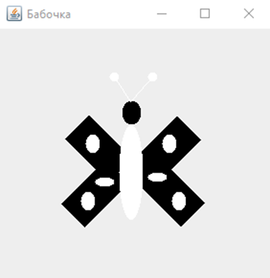
Задача 8
Составить описание объектного типа TMatr, обеспечивающего размещение матрицы произвольного размера, предусмотрев при этом возможность изменения числа строк и столбцов, а также вывода на экран подматрицы любого размера и всей матрицы.
Диаграмма классов:
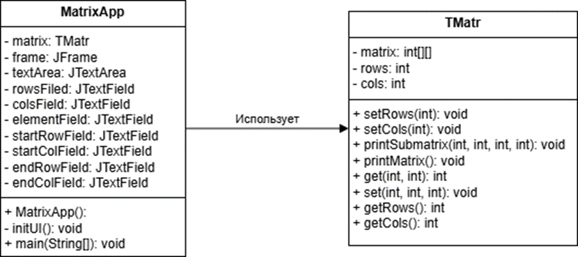
Результат:
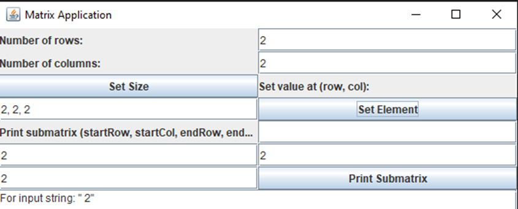
Задача 9
Итальянская игра «Математико».
Задача 10
N DQ ? ; число без знака.
Не используя арифметические команды, реализовать оператор.
(1 вариант) N := N * 2.
Решение должно содержать не более трёх команд.
Реализовать процедуру Padd(x,a), которая реализует оператор x:=x+a.
Передача параметров в стеке, стандартные соглашения о связях.